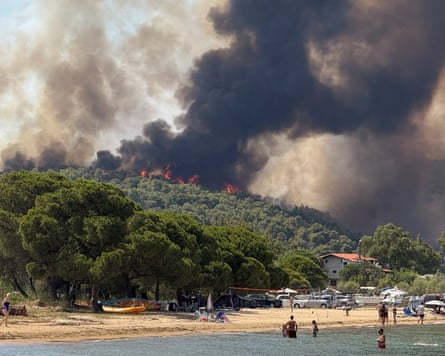

A wildfire fanned by gale-force winds has forced the evacuation of more than 1,500 people on the Greek island of Crete, officials have said, as large swathes of continental Europe baked in a punishing early summer heatwave linked to at least nine deaths.
About 230 firefighters, along with 46 vehicles and helicopters, were battling the blaze on Thursday after it broke out 24 hours earlier near Ierapetra, on the south-east coast of the country’s largest island, threatening to engulf houses and hotels.
A fire brigade spokesperson, Vassilis Vathrakogiannis, said: “There are wind gusts in the area, some measuring 9 on the Beaufort scale, triggering rekindling and hindering firefighting efforts.” He added that four settlements had been evacuated.
Residents and tourists were taking shelter at an indoor stadium and some had left Crete by boat, authorities said. Local media reported some homes had been damaged. An estimated 5,000 more holidaymakers left south-east Crete independently.
Like the rest of Crete, Ierapetra – a seaside resort with a permanent population of 23,000 – accommodates thousands of tourists in the summer. The island’s arid, uneven landscape, criss-crossed by gullies, makes it hard for firefighters to tackle blazes.
A separate fire was raging in the Halkidiki region of Greece , with 160 firefighters and 49 vehicles involved in the emergency response.
A wildfire in the Halkidiki region of Greece.Photograph: Fedja Grulovic/Reuters
In Turkey , thousands of people fled blazes in Cesme and Ödemiş in the western coastal province of İzmir.
An elderly man died in the blaze near Ödemis, about 60 miles (100km) east of the city of İzmir, in one of three villages evacuated in the area. “The village was evacuated but an elderly, bedridden patient could not be saved,” a local MP told Turkish TV.
Vathrakogiannis said the risk of destructive wildfires remained “very considerable” in July, the hottest month of the year in Greece, although the country had largely escaped the heatwave still gripping other parts of southern and central Europe .
Nearly 500 firefighters were battling wildfires in eastern Germany that severely injured two emergency workers and forced the evacuation of more than 100 people near Gohrischheide, on the border between the states of Saxony and Brandenburg.
The blazes had burned through hundreds of hectares of heathland and were still not under control on Thursday, with firefighters unable to reach parts of them because they were on a former military training area with unexploded ammunition.
The worst of the weather appeared to be over in France , with the south-east the last area expected to record temperatures of up to 36C, but parts of Spain, Italy, Austria, Hungary, Slovakia, Poland and Croatia were all forecast to hit the mid-30s on Thursday.
Italian authorities issued red alerts for 18 cities, including Rome, Milan, Turin, Bologna, Genoa and Palermo, meaning that the heat is so intense it poses a risk not just to the sick and elderly but the young and fit.
Officials in Rome said temporary blackouts were possible as power consumption by air conditioners surged. At least five people have died in the heatwave in Italy , including two, aged 75 and 60, on beaches in Sardinia.
Temperatures on the island, where wildfires have been raging, have exceeded 40C in recent days. In Genoa, an 85-year-old man died of heart failure in hospital. A 47-year-old construction worker died near Bologna and a 53-year-old woman died in Palermo.
A measure halting outdoor work , for example on construction sites and farms, during the hottest part of the day has taken effect nationwide, although it is not an obligation and many people are continuing to work their normal hours.
In Spain , the media reported that the two victims of a wildfire that consumed more than 5,500 hectares (13,590 acres) of mostly agricultural land in Torrefeta i Florejacs in Lleida province were aged 32 and 45, and had died of smoke inhalation.
Temperatures in central Albania reached 40C on Thursday, and with little rain expected until September fears are rising for local agricultural output. Serbia’s state meteorological institute also warned “extreme drought” was affecting crops.
Scientists have said Europe’s heatwaves have arrived earlier than usual this year, with temperatures surging by up to 10C in some regions as warming seas encourage the formation of a “heat dome” over much of the land mass, trapping hot air.